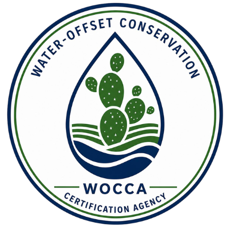

An independent agency for water conservation integrity.
WOCCA sets the rules, accredits the verifiers, and maintains the public registry behind every certified water offset — so the standard means the same thing everywhere it's applied.
WHY AN INDEPENDENT STANDARD
Water conservation needs the same rigor carbon markets took decades to build.
Water is local, physical, and immediate — a saved gallon in one basin cannot offset a shortfall in another. WOCCA was built to give that reality a credible, independent standard: one set of definitions, one verification bar, and one public registry, so a certified water offset means the same thing everywhere it's used.
We are not a project developer and we do not sell offsets. WOCCA sets the rules, accredits the verifiers who check the work, and maintains the registry that keeps the whole system honest.

HOW WE OPERATE
Three commitments that shape every decision.
These principles govern how the standard is written, how projects are reviewed, and how disputes are resolved.
Scientific rigor
Methodologies are developed and reviewed with hydrologists and water-resource engineers, and updated as the science advances.
Additionality
Only water savings that would not have happened without the project are eligible — conservation that was already required doesn't qualify.
Radical transparency
Methodologies, verifier reports, and the certificate registry are publicly accessible, so any claim can be checked.
"A water offset is only as credible as the standard behind it. Our job is to make sure that standard never bends."
GOVERNANCE
Standards set independently, reviewed publicly.
Methodology changes go through open comment periods before adoption, and every accredited verifier is reassessed on a recurring cycle to keep the bar consistent across projects and regions.
Standards Committee
Sets and revises methodologies, hears appeals, and approves new project categories based on technical review.
Accreditation Panel
Qualifies and audits the independent verification bodies that review project claims on the ground.
See the standard behind the certificate.
Explore our mission and methodology, or reach out with questions about governance and accreditation.